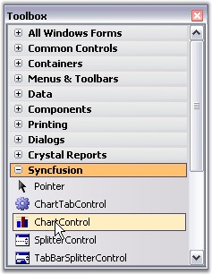
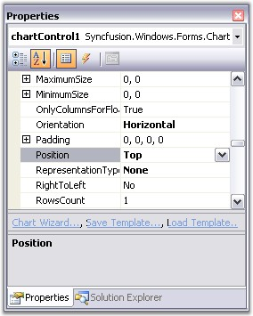
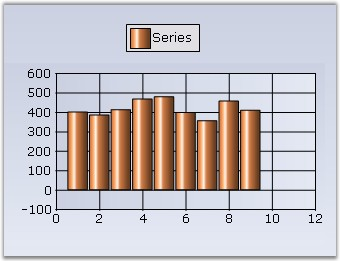

To create a simple chart control and populate it with simple data, follow the steps that are given below.
1. Open your form in the designer. Add the Syncfusion controls to your VS.NET toolbox if you haven't done so already (the install would have automatically done this unless you selected not to complete toolbox integration during installation).

Figure 6: ChartControl in Toolbox
2. Drag a Chart control onto the form.
3. Appearance and behavior-related aspects of the Chart can be controlled by setting the appropriate properties through the properties grid. For example, change the position of the legend for the control to be top aligned by changing the LegendPosition property.

Figure 7: Setting Legend Position Property
4. The data for the Chart can be added through code. Switch to code view in VS.NET and add the method shown below.
|
[C#]
using Syncfusion.Windows; using Syncfusion.Windows.Forms.Chart;
// Create a new ChartSeries. The string specified is the name of the series. ChartSeries series = this.chartControl1.Model.NewSeries("Series");
// Set the Text property of the series. This will be used by the legend to display a descriptive name. series.Text = series.Name;
// Add points to the series. // format (x, y) series.Points.Add(1, 400); series.Points.Add(2, 385); series.Points.Add(3, 412); series.Points.Add(4, 467); series.Points.Add(5, 478); series.Points.Add(6, 397); series.Points.Add(7, 355); series.Points.Add(8, 456); series.Points.Add(9, 409);
// Set the type of Chart. series.Type = ChartSeriesType.Column;
// Add the series to the Chart. this.chartControl1.Series.Add(series); |
|
[VB.NET]
Imports Syncfusion.Windows Imports Syncfusion.Windows.Forms.Chart
' Create a new ChartSeries. The string specified is the name of the series. Dim series As ChartSeries = Me.chartControl1.Model.NewSeries("Series")
' Set the Text property of the series. This will be used by the legend. series.Text = series.Name
' Add points to the series. series.Points.Add(1, 400) series.Points.Add(2, 385) series.Points.Add(3, 412) series.Points.Add(4, 467) series.Points.Add(5, 478) series.Points.Add(6, 397) series.Points.Add(7, 355) series.Points.Add(8, 456) series.Points.Add(9, 409)
' Set the type of Chart. series.Type = ChartSeriesType.Column
' Add the series to the Chart. Me.chartControl1.Series.Add(series) |
5. Now try running the project by selecting the Debug → Start Debugging. The chart will appear as shown below.

Figure 8: Chart control
See Also